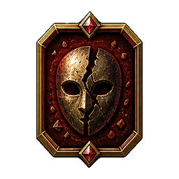

Item / Asset
Pronunciation: Compliance Stamp Forged
Compliance Stamp (forged)
Once, auto-pass bureaucratic/checkpoint gate without rolling; risky if inspected.
Aliases: Compliance Stamp (forged)
Player-Facing Description
Compliance Stamp (forged): Once, auto-pass bureaucratic/checkpoint gate without rolling; risky if inspected.
GM-Only Truth
No forced reveal. Let this entity disclose truth through scene context and player attention.
Role in Story
Loot Board item, clue, handout, or utility reward
Appearance / Sensory Palette
Give one concrete visual, one sound or texture, and one sign of who has used or neglected it.
Personality / Function
Once, auto-pass bureaucratic/checkpoint gate without rolling; risky if inspected.; use Compliance Stamp (forged) as a concrete table object with texture, ownership, and a reason it matters now.
Wants / Pressures
Give players a tangible handle on Beginner Loot Board, p2p, bureaucracy, whether they inspect, carry, return, trade, or refuse it.
Fears / Vulnerabilities
Being treated as treasure clutter instead of evidence, memory, hospitality, or infrastructure with consequences.
Appears In
Relationships
Interact / Investigate / Search / Fight Mechanics
Player-safe: Players can inspect, handle, keep, trade, reveal, or damage Compliance Stamp (forged) when it is present in the fiction.
GM-only: Use mechanics to reveal motive and cost, not to turn the entity into a rules vending machine.
No-Roll Reveals
- Surface read: Once, auto-pass bureaucratic/checkpoint gate without rolling; risky if inspected.
- Who or what this entity is connected to should be visible before a roll locks the answer.
Roll / Search / Fight Cards
Engage Compliance Stamp (forged)
Roll: Engage Compliance Stamp (forged)
Trait Options: Knowledge, Finesse, Instinct
Why This Trait: Choose the trait from the player's method, not the entity type.
Stakes: A flat read of Compliance Stamp (forged) hides the cost, motive, or useful next step.
Dice Mode: Roll Hope and Fear d12s, add the chosen trait, compare to the hinge, then read the higher die for Hope/Fear spin.
Dice Mode: Optional P2P Jenga Fear Variant, off by default and not official Daggerheart: roll one Hope d12 and use the tower for Fear only if Kyle enables it.
Official Daggerheart Results
| Critical Success | Critical Success: best possible version of the action; gain Hope and clear 1 Stress. Add an extra benefit that follows from the fiction. |
|---|---|
| Success with Hope | Success with Hope: the PC gets what they wanted and gains Hope. Keep the position clean or generous. |
| Success with Fear | Success with Fear: the PC gets what they wanted, but the GM gains Fear and introduces a cost, complication, or pressure. |
| Failure with Hope | Failure with Hope: the PC does not get the full result, but gains Hope and receives a useful thread, clue, or safer next option. |
| Failure with Fear | Failure with Fear: the PC fails and the GM gains Fear. Make a hard move that follows from the fiction. |
Kyle Slider / House Adjudication Overlay
Kyle Slider / house adjudication style; overlay only, not official Daggerheart.
| Botch <=D-5 | A flat read of Compliance Stamp (forged) hides the cost, motive, or useful next step. Use a hard complication, lost time, worse position, GM Fear, or mark Stress. Apply an official condition only if the fiction and rules justify it. |
|---|---|
| Miss D-4..D-1 | The attempt falls short, but a partial thread appears. Offer one clue, weak position, or safer follow-up. |
| Hit D..D+4 | The PC gets the core result, but it costs time, noise, leverage, or a visible resource. |
| Clean D+5..D+9 | The result lands cleanly. Give the useful truth or position without extra cost. |
| Soar >=D+10 | The result lands with leverage: add a bonus clue, better position, or future advantage. Possible loot: Compliance Stamp (forged). |
| Crit | Best case regardless of total: gain Hope, clear 1 Stress, and add a small concrete gift or clue. |
Hope Spin
Gain Hope. If using the Slider overlay, soften the band cost by one notch when it fits the fiction.
Fear Spin
GM gains Fear. If using the optional P2P Jenga variant, pull a tower block only when Kyle enabled that mode.
GM Fear Spends
- Advance a visible timer or move a threat into better position.
- Reveal an omitted clause, route cost, ward symptom, or human consequence.
Relevant Official Conditions
No official condition unless the item or clue physically creates 
Class / Community / Ancestry Reveals
- Loreborne: spots older legal, heraldic, or ward-craft language under the branding.
- Underborne: notices service doors, hidden routes, and who built the thing nobody credits.
- Highborne: reads etiquette, class panic, and reputational risk.
- Ridgeborne: notices stonework, weight, pressure, and structural weakness.
Fear Spend Features
- Reveal who benefits from the current situation.
- Make the cost personal without closing off player agency.
Condition Options
- No official condition unless the item or clue physically creates Hidden, Restrained, or Vulnerable
Search / Loot
Use as a small reward, clue, or texture rather than a treasure pile.
Checks / Rolls
| Approach | DC | Critical | Success + Hope | Success + Fear | Failure + Hope | Failure + Fear | Spend Fear |
|---|---|---|---|---|---|---|---|
| Knowledge / Instinct / Presence as fits the table | 15 | Learn the clean fact about Compliance Stamp (forged) and one deeper connection. | Learn the useful fact and gain a follow-up question. | Learn the fact, but reveal who notices, who is endangered, or what timer advances. | Miss the full answer, but gain a sensory clue or safe next step. | Misread the pressure and invite a GM move tied to cost, custody, or danger. | Spend Fear to reveal the system behind the object, move a threat closer, or make a choice more costly. |
Class / Ancestry / Community Reveals
- Loreborne / Knowledge: names the institutional pattern.
- Wildborne / community: notices local use, neglect, or ecological stress.
- Martial / security: reads custody, danger lines, and breach response.
- Magic: senses ward tone, soul-signal, or unstable resonance.
Questions to Ask Players
- What does Compliance Stamp (forged) make your character want to inspect, protect, or challenge?
- What assumption about Compliance Stamp (forged) does your character bring into the scene?
Loot / Search / Investigation Table
| Mode | Result |
|---|---|
| Visible without a roll | The surface truth of Compliance Stamp (forged): Once, auto-pass bureaucratic/checkpoint gate without rolling; risky if inspected. |
| Rushed search | One actionable clue, but not the motive or system behind it. |
| Careful search | A practical clue plus a relationship to another entity. |
| Success with Fear | The clue is true, but someone notices or the next pressure advances. |
| Failure with Hope | A partial clue points toward a safer next question. |
Use at the Table
Bring this into play when players inspect, carry, debate, trade, or remember it.